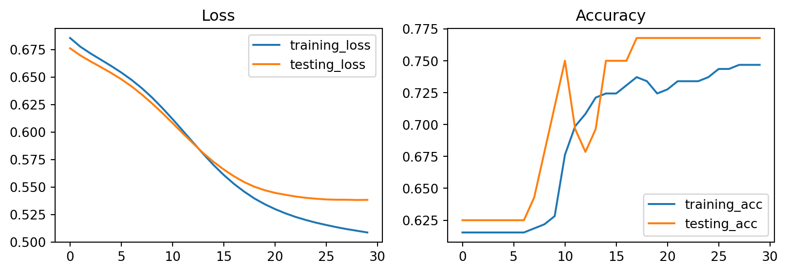

import pandas as pd
import numpy as np
from sklearn.model_selection import train_test_split
filepath = "assests/datasets/horse_colic_clean.csv"
df = pd.read_csv(filepath)
X = df.iloc[:, :22].to_numpy().astype(float)
y = (df.iloc[:, 22]<2).to_numpy().astype(int)
SEED = 42
X_train, X_test, y_train, y_test = train_test_split(X, y, test_size=0.15, random_state=SEED)
from sklearn.preprocessing import MinMaxScaler
mms = MinMaxScaler()
mms.fit(X_train)
X_train = mms.transform(X_train)
X_test = mms.transform(X_test)7 Netural networks
There are many different architects of netural networks. In our course we will only talk about the simplest one: multilayer perceptron (MLP). We will treat it as the generalization of logistic regression. In other words, we will treat logistic regression as an one-layer netural network. Under this idea, all the concepts and ideas, like gradient descent, mini-batch training, loss functions, learning curves, etc.. will be used.
7.1 Neural network: Back propagation
\[ \newcommand\diffp[2]{\dfrac{\partial #1}{\partial #2}} \]
To train a MLP model, we still use gradient descent. Therefore it is very important to know how to compute the gradient. Actually the idea is the same as logistic regreesion. The only issue is that now the model is more complicated. The gradient computation is summrized as an algorithm called back propagation. It is described as follows.
Here is an example of a Neural network with one hidden layer.

\(\Theta\) is the coefficients of the whole Neural network.
- \(a^{(1)}=\hat{\textbf{x}}\) is the input. \(a_0^{(1)}\) is added. This is an \((n+1)\)-dimension column vector.
- \(\Theta^{(1)}\) is the coefficient matrix from the input layer to the hidden layer, of size \(k\times(n+1)\).
- \(z^{(2)}=\Theta^{(1)}a^{(1)}\).
- \(a^{(2)}=\sigma(z^{(2)})\), and then add \(a^{(2)}_0\). This is an \((k+1)\)-dimension column vector.
- \(\Theta^{(2)}\) is the coefficient matrix from the hidden layer to the output layer, of size \(r\times(k+1)\).
- \(z^{(3)}=\Theta^{(2)}a^{(2)}\).
- \(a^{(3)}=\sigma(z^{(3)})\). Since this is the output layer, \(a^{(3)}_0\) won’t be added. % These \(a^{(3)}\) are \(h_{\Theta}(\textbf{x})\).
The dependency is as follows:
- \(J\) depends on \(z^{(3)}\) and \(a^{(3)}\).
- \(z^{(3)}\) and \(a^{(3)}\) depends on \(\Theta^{(2)}\) and \(a^{(2)}\).
- \(z^{(2)}\) and \(a^{(2)}\) depends on \(\Theta^{(1)}\) and \(a^{(1)}\).
- \(J\) depends on \(\Theta^{(1)}\), \(\Theta^{(2)}\) and \(a^{(1)}\).
Each layer is represented by the following diagram:

The diagram says:
\[ z^{(k+1)}=b^{(k)}+\Theta^{(k)}a^{(k)},\quad z^{(k+1)}_j=b^{(k)}_j+\sum \Theta^{(k)}_{jl}a^{(k)}_l,\quad a^{(k)}_j=\sigma(z^{(k)}_j). \]
Assume \(r,j\geq1\). Then
\[ \begin{aligned} \diffp{z^{(k+1)}_i}{a^{(k)}_r}&=\diffp*{\left(b^{(k)}_i+\sum\Theta^{(k)}_{il}a^{(k)}_l\right)}{a^{(k)}_r}=\Theta_{ir}^{(k)},\\ % \diffp{z^{(k+1)}_i}{\Theta^{(k)}_{ij}}&=\diffp*{\qty(a^{(k)}_0+\sum\Theta^{(k)}_{il}a^{(k)}_l)}{\Theta^{(k)}_{ij}}=a^{(k)}_j,\\ \diffp{z^{(k+1)}_i}{z^{(k)}_j}&=\sum_r \diffp{z^{(k+1)}_i}{a^{k}_r}\diffp{a^{(k)}_r}{z^{(k)}_j}+\sum_{p,g}\diffp{z^{(k+1)}_i}{\Theta^{(k)}_{pq}}\diffp{\Theta^{(k)}_{pq}}{z^{(k)}_j}+\sum_r \diffp{z^{(k+1)}_i}{b^{k}_r}\diffp{b^{(k)}_r}{z^{(k)}_j}\\ &=\sum_r \Theta^{(k)}_{ir}\diffp{a^{(k)}_r}{z^{(k)}_j}=\Theta^{(k)}_{ij}\diffp{a^{(k)}_j}{z^{(k)}_j}=\Theta^{(k)}_{ij}\sigma'(z^{(k)}_j),\\ \diffp{J}{z^{(k)}_j}&=\sum_r \diffp{J}{z^{(k+1)}_r}\diffp{z^{(k+1)}_r}{z^{(k)}_j}=\sum_r\diffp{J}{z^{(k+1)}_r}\Theta^{(k)}_{rj}\sigma'(z^{(k)}_j). \end{aligned} \]
We set
- \(\delta^k_j=\diffp{J}{z^{(k)}_j}\), \(\delta^k=\left[\delta^k_1,\delta_2^k,\ldots\right]^T\).
- \(\mathbf{z}^k=\left[z^{(k)}_1,z^{(k)}_2,\ldots\right]^T\), \(\mathbf{a}^k=\left[a^{(k)}_1,a^{(k)}_2,\ldots\right]^T\), \(\hat{\mathbf{a}}^k=\left[a^{(k)}_0,a^{(k)}_1,\ldots\right]^T\).
- \(\Theta^{k}=\left[\Theta^{(k)}_{ij}\right]\).
Then we have the following formula. Note that there are ``\(z_0\)’’ terms.
\[ \delta^k=\left[(\Theta^k)^T\delta^{k+1}\right]\circ \sigma'(\mathbf{z}^k). \]
\[ \begin{aligned} \diffp{z^{(k+1)}_r}{\Theta^{(k)}_{pq}}&=\diffp*{\left(b^{(k)}_r+\sum_l\Theta^{(k)}_{rl}a^{(k)}_l\right)}{\Theta^{(k)}_{pq}}=\begin{cases} 0&\text{ for }r\neq q,\\ a^{(k)}_q&\text{ for }r=q, \end{cases}\\ \diffp{J}{\Theta^{(k)}_{pq}}&=\sum_{r}\diffp{J}{z^{(k+1)}_r}\diffp{z^{(k+1)}_r}{\Theta^{(k)}_{pq}}=\diffp{J}{z^{(k+1)}_p}\diffp{z^{(k+1)}_p}{\Theta^{(k)}_{pq}}=\delta^{k+1}_pa^{k}_q,\\ \diffp{J}{b^{(k)}_{j}}&=\sum_{r}\diffp{J}{z^{(k+1)}_r}\diffp{z^{(k+1)}_r}{b^{(k)}_{j}}=\diffp{J}{z^{(k+1)}_j}\diffp{z^{(k+1)}_j}{b^{(k)}_{j}}=\diffp{J}{z^{(k+1)}_j}=\delta^{k+1}_j. \end{aligned} \]
Extend \(\hat{\Theta}=\left[b^{(k)},\Theta^{(k)}\right]\), and \(\partial^k J=\left[\diffp{J}{\hat{\Theta}^{(k)}_{ij}}\right]\). Then \[ \partial^k J=\left[\delta^{k+1}, \delta^{k+1}(\mathbf{a}^k)^T\right]. \] Then the algorithm is as follows.
- Starting from \(x\), \(y\) and some random \(\Theta\).
- Forward computation: compute \(z^{(k)}\) and \(a^{(k)}\). The last \(a^{(n)}\) is \(h\).
- Compute \(\delta^n=\nabla J\circ\sigma'(z^{(n)})\). In the case of \(J=\frac12||{h-y}||^2\), \(\nabla J=(a^{(n)}-y)\), and then \(\delta^n=(a^{(n)}-y)\circ\sigma'(z^{(n)})\).
- Backwards: \(\delta^k=\left[(\Theta^k)^T\delta^{k+1}\right]\circ \sigma'(\mathbf{z}^k)\), and \(\partial^k J=\left[\delta^{k+1}, \delta^{k+1}(\mathbf{a}^k)^T\right]\) .
Example 7.1 Consider there are 3 layers: input, hidden and output. There are \(m+1\) nodes in the input layer, \(n+1\) nodes in the hidden layer and \(k\) in the output layer. Therefore
- \(a^{(1)}\) and \(\delta^1\) are \(m\)-dim column vectors.
- \(z^{(2)}\), \(a^{(2)}\) and \(\delta^2\) are \(n\)-dim column vectors.
- \(z^{(3)}\), \(a^{(3)}\) and \(\delta^3\) are \(k\)-dim column vectors.
- \(\hat{\Theta}^1\) is \(n\times(m+1)\), \(\hat{\Theta}^2\) is \(k\times(n+1)\).
- \(z^{(2)}=b^{(1)}+\Theta^{(1)}a^{(1)}=\hat{\Theta}^{(1)}\hat{a}^{(1)}\), \(z^{(3)}=b^{(2)}+\Theta^{(2)}a^{(2)}=\hat{\Theta}^{(2)}\hat{a}^{(2)}\).
- \(\delta^3=\nabla_aJ\circ\sigma'(z^{(3)})\). This is a \(k\)-dim column vector.
- \(\partial^2 J=\left[\delta^3,\delta^3(a^{(2)})^T\right]\).
- \(\delta^2=\left[(\Theta^2)^T\delta^3\right]\circ \sigma'(z^{(2)})\), where \((\hat{\Theta^2})^T\delta^3=(\hat{\Theta^2})^T\delta^3\) and then remove the first row.
- \(\delta^1=\begin{bmatrix}(\Theta^1)^T\delta^2\end{bmatrix}\circ \sigma'(z^{(1)})\), where \((\hat{\Theta^1})^T\delta^2=(\hat{\Theta^1})^T\delta^2\) and then remove the first row.
- \(\partial^1 J=\left[\delta^2,\delta^2(a^{(1)})^T\right]\).
- When \(J=-\frac1m\sum y\ln a+(1-y)\ln(1-a)\), \(\delta^3=\frac1m(\sum a^{(3)}-\sum y)\).
7.2 Example
Let us take some of our old dataset as an example. This is an continuation of the horse colic dataset from Logistic regression. Note that most of the codes are directly taken from logistic regression section, since MLP is just a generalization of logistic regression.
The data is feed into the dataloader. Note that we change the batch size of the test dataloader to be the whole set, since I don’t want to do batch evaluation. This can be modified accordingly.
import torch
from torch.utils.data import Dataset, DataLoader
class MyDataset(Dataset):
def __init__(self, X, y):
self.X = torch.tensor(X, dtype=torch.float32)
self.y = torch.tensor(y, dtype=torch.float32).view(-1, 1)
def __len__(self):
return self.X.shape[0]
def __getitem__(self, idx):
return (self.X[idx], self.y[idx])
train_loader = DataLoader(MyDataset(X_train, y_train), batch_size =32)
val_loader = DataLoader(MyDataset(X_test, y_test), batch_size=X_test.shape[0])Now we build a neural network. This is a 2-layer model, with 1 hidden layer with 10 nodes. Since we are going to use BCEWithLogitsLoss, we don’t add the final activation function here in the model, but leave it to the loss function.
import torch.nn as nn
class MyModel(nn.Module):
def __init__(self, num_inputs):
super().__init__()
self.linear1 = nn.Linear(num_inputs, 20)
self.act1 = nn.ReLU()
self.linear2 = nn.Linear(20, 1)
# self.act2 = nn.Sigmoid()
def forward(self, x):
x = self.linear1(x)
x = self.act1(x)
x = self.linear2(x)
# x = self.act2(x)
return x
model = MyModel(22)We could use the following code to look at the structure of the model.
total = 0
for n, p in model.named_parameters():
print(n, p.shape, p.numel())
total += p.numel()
print("total params:", total)linear1.weight torch.Size([20, 22]) 440
linear1.bias torch.Size([20]) 20
linear2.weight torch.Size([1, 20]) 20
linear2.bias torch.Size([1]) 1
total params: 481Now we start to train the model and evaluate. Note that the majority part of the code is about evaluating the result. Since we are doing binary classification, our result can be computed by checking whether our model output (before the final sigmoid function) is positive or negative. This is where (p>0) comes from.
import time
import matplotlib.pyplot as plt
from torch.optim import SGD
from torch.nn import BCEWithLogitsLoss
model = MyModel(22)
optim = SGD(model.parameters(), lr=0.1)
loss_fn = BCEWithLogitsLoss()
n_epochs = 30
class Meter:
def __init__(self, total=0.0, count=0, value=0.0):
self.total = total
self.count = count
self.value = value
self.avg = self.total / self.count if self.count > 0 else 0.0
def update(self, value, n=1):
self.value = value
self.total += value * n
self.count += n
self.avg = self.total / self.count if self.count > 0 else 0.0
history = {'loss': [], 'acc': [], 'loss_test': [], 'acc_test': []}
for epoch in range(n_epochs):
monitor_loss = Meter()
monitor_loss_test = Meter()
monitor_acc = Meter()
monitor_acc_test = Meter()
monitor_time = Meter()
for i, (X_batch, y_batch) in enumerate(train_loader):
model.train()
t0 = time.perf_counter()
optim.zero_grad()
p = model(X_batch)
loss = loss_fn(p, y_batch)
loss.backward()
optim.step()
t1 = time.perf_counter()
with torch.no_grad():
pred = (p>0).to(torch.long)
acc = (pred == y_batch).to(torch.float).mean().item()
monitor_acc.update(acc, n=X_batch.shape[0])
monitor_loss.update(loss.item(), n=X_batch.shape[0])
monitor_time.update(t1-t0, n=1)
print(
f'epoch: {epoch}, batch: {i+1}/{len(train_loader)} '
f'time: {monitor_time.value: .4f} ({monitor_time.total: .4f}) '
f'loss: {monitor_loss.value: .4f} ({monitor_loss.avg: .4f}) '
f'acc: {monitor_acc.value: .2f} ({monitor_acc.avg: .2f})'
)
history['loss'].append(monitor_loss.avg)
history['acc'].append(monitor_acc.avg)
with torch.no_grad():
model.eval()
for X_batch_test, y_batch_test in val_loader:
p = model(X_batch_test)
loss_test = loss_fn(p, y_batch_test)
monitor_loss_test.update(loss_test.item(), n=X_batch_test.shape[0])
pred_test = (p>0).to(torch.int)
acc_test = ( pred_test == y_batch_test).to(torch.float).mean().item()
monitor_acc_test.update(acc_test, n=X_batch_test.shape[0])
print(
f'test epoch {epoch} '
f'test loss: {monitor_loss_test.avg: .4f} '
f'test acc: {monitor_acc_test.avg: .2f}'
)
history['loss_test'].append(monitor_loss_test.avg)
history['acc_test'].append(monitor_acc_test.avg)
fig, axs = plt.subplots(1, 2)
fig.set_size_inches((10,3))
axs[0].plot(history['loss'], label='training_loss')
axs[0].plot(history['loss_test'], label='testing_loss')
axs[0].legend()
axs[1].plot(history['acc'], label='training_acc')
axs[1].plot(history['acc_test'], label='testing_acc')
axs[1].legend()
axs[0].set_title('Loss')
axs[1].set_title('Accuracy')Click to view results
epoch: 0, batch: 1/10 time: 0.0023 ( 0.0023) loss: 0.6999 ( 0.6999) acc: 0.53 ( 0.53)
epoch: 0, batch: 2/10 time: 0.0005 ( 0.0028) loss: 0.6304 ( 0.6651) acc: 0.75 ( 0.64)
epoch: 0, batch: 3/10 time: 0.0006 ( 0.0034) loss: 0.6381 ( 0.6561) acc: 0.72 ( 0.67)
epoch: 0, batch: 4/10 time: 0.0012 ( 0.0046) loss: 0.6498 ( 0.6546) acc: 0.69 ( 0.67)
epoch: 0, batch: 5/10 time: 0.0006 ( 0.0052) loss: 0.6623 ( 0.6561) acc: 0.66 ( 0.67)
epoch: 0, batch: 6/10 time: 0.0005 ( 0.0057) loss: 0.6894 ( 0.6616) acc: 0.56 ( 0.65)
epoch: 0, batch: 7/10 time: 0.0005 ( 0.0061) loss: 0.6212 ( 0.6559) acc: 0.75 ( 0.67)
epoch: 0, batch: 8/10 time: 0.0005 ( 0.0066) loss: 0.7313 ( 0.6653) acc: 0.47 ( 0.64)
epoch: 0, batch: 9/10 time: 0.0005 ( 0.0070) loss: 0.7252 ( 0.6720) acc: 0.44 ( 0.62)
epoch: 0, batch: 10/10 time: 0.0005 ( 0.0075) loss: 0.6829 ( 0.6728) acc: 0.58 ( 0.62)
test epoch 0 test loss: 0.6575 test acc: 0.62
epoch: 1, batch: 1/10 time: 0.0005 ( 0.0005) loss: 0.6890 ( 0.6890) acc: 0.53 ( 0.53)
epoch: 1, batch: 2/10 time: 0.0005 ( 0.0010) loss: 0.6242 ( 0.6566) acc: 0.75 ( 0.64)
epoch: 1, batch: 3/10 time: 0.0005 ( 0.0014) loss: 0.6296 ( 0.6476) acc: 0.72 ( 0.67)
epoch: 1, batch: 4/10 time: 0.0004 ( 0.0019) loss: 0.6361 ( 0.6447) acc: 0.69 ( 0.67)
epoch: 1, batch: 5/10 time: 0.0005 ( 0.0023) loss: 0.6507 ( 0.6459) acc: 0.66 ( 0.67)
epoch: 1, batch: 6/10 time: 0.0005 ( 0.0028) loss: 0.6780 ( 0.6513) acc: 0.56 ( 0.65)
epoch: 1, batch: 7/10 time: 0.0005 ( 0.0033) loss: 0.6136 ( 0.6459) acc: 0.75 ( 0.67)
epoch: 1, batch: 8/10 time: 0.0005 ( 0.0038) loss: 0.7251 ( 0.6558) acc: 0.47 ( 0.64)
epoch: 1, batch: 9/10 time: 0.0006 ( 0.0043) loss: 0.7140 ( 0.6623) acc: 0.44 ( 0.62)
epoch: 1, batch: 10/10 time: 0.0005 ( 0.0048) loss: 0.6769 ( 0.6634) acc: 0.58 ( 0.62)
test epoch 1 test loss: 0.6482 test acc: 0.62
epoch: 2, batch: 1/10 time: 0.0005 ( 0.0005) loss: 0.6791 ( 0.6791) acc: 0.53 ( 0.53)
epoch: 2, batch: 2/10 time: 0.0004 ( 0.0009) loss: 0.6168 ( 0.6480) acc: 0.75 ( 0.64)
epoch: 2, batch: 3/10 time: 0.0004 ( 0.0014) loss: 0.6201 ( 0.6387) acc: 0.72 ( 0.67)
epoch: 2, batch: 4/10 time: 0.0004 ( 0.0018) loss: 0.6222 ( 0.6346) acc: 0.69 ( 0.67)
epoch: 2, batch: 5/10 time: 0.0004 ( 0.0022) loss: 0.6390 ( 0.6354) acc: 0.66 ( 0.67)
epoch: 2, batch: 6/10 time: 0.0004 ( 0.0026) loss: 0.6672 ( 0.6407) acc: 0.56 ( 0.65)
epoch: 2, batch: 7/10 time: 0.0004 ( 0.0031) loss: 0.6050 ( 0.6356) acc: 0.75 ( 0.67)
epoch: 2, batch: 8/10 time: 0.0004 ( 0.0035) loss: 0.7206 ( 0.6463) acc: 0.47 ( 0.64)
epoch: 2, batch: 9/10 time: 0.0004 ( 0.0039) loss: 0.7039 ( 0.6527) acc: 0.44 ( 0.62)
epoch: 2, batch: 10/10 time: 0.0004 ( 0.0044) loss: 0.6709 ( 0.6541) acc: 0.58 ( 0.62)
test epoch 2 test loss: 0.6387 test acc: 0.62
epoch: 3, batch: 1/10 time: 0.0004 ( 0.0004) loss: 0.6696 ( 0.6696) acc: 0.53 ( 0.53)
epoch: 3, batch: 2/10 time: 0.0004 ( 0.0009) loss: 0.6085 ( 0.6391) acc: 0.75 ( 0.64)
epoch: 3, batch: 3/10 time: 0.0004 ( 0.0013) loss: 0.6100 ( 0.6294) acc: 0.72 ( 0.67)
epoch: 3, batch: 4/10 time: 0.0004 ( 0.0017) loss: 0.6076 ( 0.6239) acc: 0.69 ( 0.67)
epoch: 3, batch: 5/10 time: 0.0015 ( 0.0032) loss: 0.6271 ( 0.6246) acc: 0.66 ( 0.67)
epoch: 3, batch: 6/10 time: 0.0006 ( 0.0038) loss: 0.6562 ( 0.6298) acc: 0.56 ( 0.65)
epoch: 3, batch: 7/10 time: 0.0005 ( 0.0043) loss: 0.5960 ( 0.6250) acc: 0.75 ( 0.67)
epoch: 3, batch: 8/10 time: 0.0005 ( 0.0047) loss: 0.7168 ( 0.6365) acc: 0.47 ( 0.64)
epoch: 3, batch: 9/10 time: 0.0004 ( 0.0052) loss: 0.6936 ( 0.6428) acc: 0.44 ( 0.62)
epoch: 3, batch: 10/10 time: 0.0004 ( 0.0056) loss: 0.6650 ( 0.6445) acc: 0.62 ( 0.62)
test epoch 3 test loss: 0.6289 test acc: 0.62
epoch: 4, batch: 1/10 time: 0.0004 ( 0.0004) loss: 0.6599 ( 0.6599) acc: 0.56 ( 0.56)
epoch: 4, batch: 2/10 time: 0.0004 ( 0.0009) loss: 0.6003 ( 0.6301) acc: 0.78 ( 0.67)
epoch: 4, batch: 3/10 time: 0.0005 ( 0.0014) loss: 0.5998 ( 0.6200) acc: 0.75 ( 0.70)
epoch: 4, batch: 4/10 time: 0.0004 ( 0.0018) loss: 0.5924 ( 0.6131) acc: 0.69 ( 0.70)
epoch: 4, batch: 5/10 time: 0.0004 ( 0.0023) loss: 0.6147 ( 0.6134) acc: 0.66 ( 0.69)
epoch: 4, batch: 6/10 time: 0.0004 ( 0.0027) loss: 0.6445 ( 0.6186) acc: 0.56 ( 0.67)
epoch: 4, batch: 7/10 time: 0.0004 ( 0.0032) loss: 0.5869 ( 0.6141) acc: 0.75 ( 0.68)
epoch: 4, batch: 8/10 time: 0.0005 ( 0.0036) loss: 0.7125 ( 0.6264) acc: 0.50 ( 0.66)
epoch: 4, batch: 9/10 time: 0.0005 ( 0.0041) loss: 0.6823 ( 0.6326) acc: 0.41 ( 0.63)
epoch: 4, batch: 10/10 time: 0.0005 ( 0.0045) loss: 0.6595 ( 0.6347) acc: 0.62 ( 0.63)
test epoch 4 test loss: 0.6188 test acc: 0.64
epoch: 5, batch: 1/10 time: 0.0006 ( 0.0006) loss: 0.6496 ( 0.6496) acc: 0.59 ( 0.59)
epoch: 5, batch: 2/10 time: 0.0005 ( 0.0011) loss: 0.5923 ( 0.6210) acc: 0.75 ( 0.67)
epoch: 5, batch: 3/10 time: 0.0005 ( 0.0016) loss: 0.5893 ( 0.6104) acc: 0.75 ( 0.70)
epoch: 5, batch: 4/10 time: 0.0004 ( 0.0020) loss: 0.5766 ( 0.6020) acc: 0.72 ( 0.70)
epoch: 5, batch: 5/10 time: 0.0004 ( 0.0025) loss: 0.6018 ( 0.6019) acc: 0.69 ( 0.70)
epoch: 5, batch: 6/10 time: 0.0004 ( 0.0029) loss: 0.6325 ( 0.6070) acc: 0.59 ( 0.68)
epoch: 5, batch: 7/10 time: 0.0004 ( 0.0033) loss: 0.5775 ( 0.6028) acc: 0.78 ( 0.70)
epoch: 5, batch: 8/10 time: 0.0004 ( 0.0038) loss: 0.7084 ( 0.6160) acc: 0.50 ( 0.67)
epoch: 5, batch: 9/10 time: 0.0005 ( 0.0042) loss: 0.6703 ( 0.6220) acc: 0.47 ( 0.65)
epoch: 5, batch: 10/10 time: 0.0005 ( 0.0047) loss: 0.6540 ( 0.6245) acc: 0.67 ( 0.65)
test epoch 5 test loss: 0.6082 test acc: 0.68
epoch: 6, batch: 1/10 time: 0.0005 ( 0.0005) loss: 0.6389 ( 0.6389) acc: 0.59 ( 0.59)
epoch: 6, batch: 2/10 time: 0.0004 ( 0.0009) loss: 0.5846 ( 0.6117) acc: 0.78 ( 0.69)
epoch: 6, batch: 3/10 time: 0.0004 ( 0.0014) loss: 0.5789 ( 0.6008) acc: 0.72 ( 0.70)
epoch: 6, batch: 4/10 time: 0.0004 ( 0.0018) loss: 0.5600 ( 0.5906) acc: 0.78 ( 0.72)
epoch: 6, batch: 5/10 time: 0.0004 ( 0.0023) loss: 0.5884 ( 0.5901) acc: 0.69 ( 0.71)
epoch: 6, batch: 6/10 time: 0.0004 ( 0.0027) loss: 0.6194 ( 0.5950) acc: 0.66 ( 0.70)
epoch: 6, batch: 7/10 time: 0.0008 ( 0.0035) loss: 0.5676 ( 0.5911) acc: 0.81 ( 0.72)
epoch: 6, batch: 8/10 time: 0.0005 ( 0.0040) loss: 0.7047 ( 0.6053) acc: 0.50 ( 0.69)
epoch: 6, batch: 9/10 time: 0.0005 ( 0.0045) loss: 0.6574 ( 0.6111) acc: 0.59 ( 0.68)
epoch: 6, batch: 10/10 time: 0.0005 ( 0.0050) loss: 0.6482 ( 0.6139) acc: 0.67 ( 0.68)
test epoch 6 test loss: 0.5972 test acc: 0.71
epoch: 7, batch: 1/10 time: 0.0005 ( 0.0005) loss: 0.6278 ( 0.6278) acc: 0.59 ( 0.59)
epoch: 7, batch: 2/10 time: 0.0005 ( 0.0010) loss: 0.5773 ( 0.6025) acc: 0.78 ( 0.69)
epoch: 7, batch: 3/10 time: 0.0005 ( 0.0014) loss: 0.5681 ( 0.5911) acc: 0.75 ( 0.71)
epoch: 7, batch: 4/10 time: 0.0005 ( 0.0019) loss: 0.5426 ( 0.5790) acc: 0.78 ( 0.73)
epoch: 7, batch: 5/10 time: 0.0005 ( 0.0024) loss: 0.5752 ( 0.5782) acc: 0.72 ( 0.72)
epoch: 7, batch: 6/10 time: 0.0005 ( 0.0028) loss: 0.6066 ( 0.5829) acc: 0.62 ( 0.71)
epoch: 7, batch: 7/10 time: 0.0005 ( 0.0033) loss: 0.5573 ( 0.5793) acc: 0.81 ( 0.72)
epoch: 7, batch: 8/10 time: 0.0005 ( 0.0038) loss: 0.7020 ( 0.5946) acc: 0.53 ( 0.70)
epoch: 7, batch: 9/10 time: 0.0005 ( 0.0042) loss: 0.6447 ( 0.6002) acc: 0.72 ( 0.70)
epoch: 7, batch: 10/10 time: 0.0005 ( 0.0047) loss: 0.6419 ( 0.6034) acc: 0.62 ( 0.70)
test epoch 7 test loss: 0.5866 test acc: 0.71
epoch: 8, batch: 1/10 time: 0.0005 ( 0.0005) loss: 0.6173 ( 0.6173) acc: 0.66 ( 0.66)
epoch: 8, batch: 2/10 time: 0.0008 ( 0.0014) loss: 0.5709 ( 0.5941) acc: 0.78 ( 0.72)
epoch: 8, batch: 3/10 time: 0.0005 ( 0.0019) loss: 0.5579 ( 0.5820) acc: 0.78 ( 0.74)
epoch: 8, batch: 4/10 time: 0.0005 ( 0.0024) loss: 0.5257 ( 0.5679) acc: 0.81 ( 0.76)
epoch: 8, batch: 5/10 time: 0.0005 ( 0.0029) loss: 0.5624 ( 0.5668) acc: 0.72 ( 0.75)
epoch: 8, batch: 6/10 time: 0.0005 ( 0.0033) loss: 0.5936 ( 0.5713) acc: 0.69 ( 0.74)
epoch: 8, batch: 7/10 time: 0.0005 ( 0.0038) loss: 0.5474 ( 0.5679) acc: 0.78 ( 0.75)
epoch: 8, batch: 8/10 time: 0.0005 ( 0.0043) loss: 0.6994 ( 0.5843) acc: 0.50 ( 0.71)
epoch: 8, batch: 9/10 time: 0.0005 ( 0.0048) loss: 0.6320 ( 0.5896) acc: 0.72 ( 0.72)
epoch: 8, batch: 10/10 time: 0.0005 ( 0.0052) loss: 0.6354 ( 0.5931) acc: 0.62 ( 0.71)
test epoch 8 test loss: 0.5766 test acc: 0.73
epoch: 9, batch: 1/10 time: 0.0005 ( 0.0005) loss: 0.6081 ( 0.6081) acc: 0.66 ( 0.66)
epoch: 9, batch: 2/10 time: 0.0005 ( 0.0010) loss: 0.5650 ( 0.5866) acc: 0.78 ( 0.72)
epoch: 9, batch: 3/10 time: 0.0005 ( 0.0014) loss: 0.5480 ( 0.5737) acc: 0.78 ( 0.74)
epoch: 9, batch: 4/10 time: 0.0005 ( 0.0019) loss: 0.5088 ( 0.5575) acc: 0.84 ( 0.77)
epoch: 9, batch: 5/10 time: 0.0005 ( 0.0023) loss: 0.5504 ( 0.5561) acc: 0.78 ( 0.77)
epoch: 9, batch: 6/10 time: 0.0005 ( 0.0028) loss: 0.5809 ( 0.5602) acc: 0.69 ( 0.76)
epoch: 9, batch: 7/10 time: 0.0004 ( 0.0032) loss: 0.5379 ( 0.5570) acc: 0.78 ( 0.76)
epoch: 9, batch: 8/10 time: 0.0004 ( 0.0036) loss: 0.6973 ( 0.5746) acc: 0.50 ( 0.73)
epoch: 9, batch: 9/10 time: 0.0005 ( 0.0041) loss: 0.6205 ( 0.5797) acc: 0.72 ( 0.73)
epoch: 9, batch: 10/10 time: 0.0004 ( 0.0045) loss: 0.6292 ( 0.5835) acc: 0.58 ( 0.71)
test epoch 9 test loss: 0.5675 test acc: 0.71
epoch: 10, batch: 1/10 time: 0.0004 ( 0.0004) loss: 0.5991 ( 0.5991) acc: 0.66 ( 0.66)
epoch: 10, batch: 2/10 time: 0.0004 ( 0.0008) loss: 0.5610 ( 0.5801) acc: 0.75 ( 0.70)
epoch: 10, batch: 3/10 time: 0.0004 ( 0.0012) loss: 0.5392 ( 0.5664) acc: 0.75 ( 0.72)
epoch: 10, batch: 4/10 time: 0.0004 ( 0.0016) loss: 0.4928 ( 0.5480) acc: 0.84 ( 0.75)
epoch: 10, batch: 5/10 time: 0.0004 ( 0.0019) loss: 0.5392 ( 0.5463) acc: 0.75 ( 0.75)
epoch: 10, batch: 6/10 time: 0.0004 ( 0.0023) loss: 0.5688 ( 0.5500) acc: 0.69 ( 0.74)
epoch: 10, batch: 7/10 time: 0.0004 ( 0.0027) loss: 0.5289 ( 0.5470) acc: 0.78 ( 0.75)
epoch: 10, batch: 8/10 time: 0.0004 ( 0.0031) loss: 0.6960 ( 0.5656) acc: 0.53 ( 0.72)
epoch: 10, batch: 9/10 time: 0.0004 ( 0.0035) loss: 0.6101 ( 0.5706) acc: 0.72 ( 0.72)
epoch: 10, batch: 10/10 time: 0.0004 ( 0.0039) loss: 0.6234 ( 0.5746) acc: 0.62 ( 0.71)
test epoch 10 test loss: 0.5589 test acc: 0.75
epoch: 11, batch: 1/10 time: 0.0004 ( 0.0004) loss: 0.5908 ( 0.5908) acc: 0.66 ( 0.66)
epoch: 11, batch: 2/10 time: 0.0004 ( 0.0008) loss: 0.5569 ( 0.5739) acc: 0.75 ( 0.70)
epoch: 11, batch: 3/10 time: 0.0004 ( 0.0012) loss: 0.5305 ( 0.5594) acc: 0.78 ( 0.73)
epoch: 11, batch: 4/10 time: 0.0005 ( 0.0017) loss: 0.4778 ( 0.5390) acc: 0.84 ( 0.76)
epoch: 11, batch: 5/10 time: 0.0004 ( 0.0021) loss: 0.5291 ( 0.5370) acc: 0.75 ( 0.76)
epoch: 11, batch: 6/10 time: 0.0004 ( 0.0025) loss: 0.5574 ( 0.5404) acc: 0.69 ( 0.74)
epoch: 11, batch: 7/10 time: 0.0004 ( 0.0029) loss: 0.5208 ( 0.5376) acc: 0.72 ( 0.74)
epoch: 11, batch: 8/10 time: 0.0006 ( 0.0035) loss: 0.6945 ( 0.5572) acc: 0.53 ( 0.71)
epoch: 11, batch: 9/10 time: 0.0004 ( 0.0040) loss: 0.6004 ( 0.5620) acc: 0.75 ( 0.72)
epoch: 11, batch: 10/10 time: 0.0004 ( 0.0043) loss: 0.6183 ( 0.5663) acc: 0.62 ( 0.71)
test epoch 11 test loss: 0.5511 test acc: 0.77
epoch: 12, batch: 1/10 time: 0.0004 ( 0.0004) loss: 0.5837 ( 0.5837) acc: 0.66 ( 0.66)
epoch: 12, batch: 2/10 time: 0.0004 ( 0.0008) loss: 0.5536 ( 0.5687) acc: 0.72 ( 0.69)
epoch: 12, batch: 3/10 time: 0.0004 ( 0.0012) loss: 0.5223 ( 0.5532) acc: 0.78 ( 0.72)
epoch: 12, batch: 4/10 time: 0.0004 ( 0.0016) loss: 0.4639 ( 0.5309) acc: 0.88 ( 0.76)
epoch: 12, batch: 5/10 time: 0.0004 ( 0.0020) loss: 0.5199 ( 0.5287) acc: 0.72 ( 0.75)
epoch: 12, batch: 6/10 time: 0.0004 ( 0.0024) loss: 0.5470 ( 0.5317) acc: 0.72 ( 0.74)
epoch: 12, batch: 7/10 time: 0.0004 ( 0.0028) loss: 0.5129 ( 0.5290) acc: 0.72 ( 0.74)
epoch: 12, batch: 8/10 time: 0.0004 ( 0.0031) loss: 0.6942 ( 0.5497) acc: 0.50 ( 0.71)
epoch: 12, batch: 9/10 time: 0.0004 ( 0.0035) loss: 0.5921 ( 0.5544) acc: 0.75 ( 0.72)
epoch: 12, batch: 10/10 time: 0.0004 ( 0.0039) loss: 0.6137 ( 0.5590) acc: 0.62 ( 0.71)
test epoch 12 test loss: 0.5444 test acc: 0.80
epoch: 13, batch: 1/10 time: 0.0004 ( 0.0004) loss: 0.5774 ( 0.5774) acc: 0.66 ( 0.66)
epoch: 13, batch: 2/10 time: 0.0005 ( 0.0009) loss: 0.5517 ( 0.5645) acc: 0.72 ( 0.69)
epoch: 13, batch: 3/10 time: 0.0004 ( 0.0013) loss: 0.5154 ( 0.5481) acc: 0.78 ( 0.72)
epoch: 13, batch: 4/10 time: 0.0004 ( 0.0016) loss: 0.4513 ( 0.5239) acc: 0.88 ( 0.76)
epoch: 13, batch: 5/10 time: 0.0004 ( 0.0020) loss: 0.5118 ( 0.5215) acc: 0.72 ( 0.75)
epoch: 13, batch: 6/10 time: 0.0004 ( 0.0024) loss: 0.5376 ( 0.5242) acc: 0.72 ( 0.74)
epoch: 13, batch: 7/10 time: 0.0004 ( 0.0028) loss: 0.5058 ( 0.5216) acc: 0.72 ( 0.74)
epoch: 13, batch: 8/10 time: 0.0004 ( 0.0031) loss: 0.6940 ( 0.5431) acc: 0.50 ( 0.71)
epoch: 13, batch: 9/10 time: 0.0005 ( 0.0037) loss: 0.5850 ( 0.5478) acc: 0.75 ( 0.72)
epoch: 13, batch: 10/10 time: 0.0005 ( 0.0041) loss: 0.6095 ( 0.5525) acc: 0.62 ( 0.71)
test epoch 13 test loss: 0.5387 test acc: 0.77
epoch: 14, batch: 1/10 time: 0.0005 ( 0.0005) loss: 0.5718 ( 0.5718) acc: 0.66 ( 0.66)
epoch: 14, batch: 2/10 time: 0.0005 ( 0.0010) loss: 0.5506 ( 0.5612) acc: 0.72 ( 0.69)
epoch: 14, batch: 3/10 time: 0.0005 ( 0.0015) loss: 0.5094 ( 0.5439) acc: 0.78 ( 0.72)
epoch: 14, batch: 4/10 time: 0.0005 ( 0.0019) loss: 0.4402 ( 0.5180) acc: 0.88 ( 0.76)
epoch: 14, batch: 5/10 time: 0.0005 ( 0.0024) loss: 0.5049 ( 0.5154) acc: 0.72 ( 0.75)
epoch: 14, batch: 6/10 time: 0.0005 ( 0.0029) loss: 0.5295 ( 0.5177) acc: 0.75 ( 0.75)
epoch: 14, batch: 7/10 time: 0.0005 ( 0.0035) loss: 0.4998 ( 0.5152) acc: 0.75 ( 0.75)
epoch: 14, batch: 8/10 time: 0.0005 ( 0.0039) loss: 0.6934 ( 0.5375) acc: 0.50 ( 0.72)
epoch: 14, batch: 9/10 time: 0.0006 ( 0.0045) loss: 0.5785 ( 0.5420) acc: 0.75 ( 0.72)
epoch: 14, batch: 10/10 time: 0.0005 ( 0.0050) loss: 0.6056 ( 0.5469) acc: 0.67 ( 0.72)
test epoch 14 test loss: 0.5339 test acc: 0.77
epoch: 15, batch: 1/10 time: 0.0005 ( 0.0005) loss: 0.5664 ( 0.5664) acc: 0.69 ( 0.69)
epoch: 15, batch: 2/10 time: 0.0005 ( 0.0009) loss: 0.5502 ( 0.5583) acc: 0.72 ( 0.70)
epoch: 15, batch: 3/10 time: 0.0005 ( 0.0014) loss: 0.5042 ( 0.5403) acc: 0.78 ( 0.73)
epoch: 15, batch: 4/10 time: 0.0005 ( 0.0019) loss: 0.4298 ( 0.5127) acc: 0.88 ( 0.77)
epoch: 15, batch: 5/10 time: 0.0004 ( 0.0023) loss: 0.4989 ( 0.5099) acc: 0.72 ( 0.76)
epoch: 15, batch: 6/10 time: 0.0004 ( 0.0026) loss: 0.5219 ( 0.5119) acc: 0.75 ( 0.76)
epoch: 15, batch: 7/10 time: 0.0004 ( 0.0030) loss: 0.4940 ( 0.5093) acc: 0.75 ( 0.75)
epoch: 15, batch: 8/10 time: 0.0004 ( 0.0034) loss: 0.6939 ( 0.5324) acc: 0.50 ( 0.72)
epoch: 15, batch: 9/10 time: 0.0004 ( 0.0038) loss: 0.5739 ( 0.5370) acc: 0.75 ( 0.73)
epoch: 15, batch: 10/10 time: 0.0004 ( 0.0042) loss: 0.6018 ( 0.5420) acc: 0.67 ( 0.72)
test epoch 15 test loss: 0.5292 test acc: 0.77
epoch: 16, batch: 1/10 time: 0.0004 ( 0.0004) loss: 0.5626 ( 0.5626) acc: 0.72 ( 0.72)
epoch: 16, batch: 2/10 time: 0.0004 ( 0.0008) loss: 0.5485 ( 0.5556) acc: 0.72 ( 0.72)
epoch: 16, batch: 3/10 time: 0.0004 ( 0.0012) loss: 0.4992 ( 0.5368) acc: 0.78 ( 0.74)
epoch: 16, batch: 4/10 time: 0.0004 ( 0.0016) loss: 0.4201 ( 0.5076) acc: 0.88 ( 0.77)
epoch: 16, batch: 5/10 time: 0.0004 ( 0.0020) loss: 0.4935 ( 0.5048) acc: 0.72 ( 0.76)
epoch: 16, batch: 6/10 time: 0.0005 ( 0.0025) loss: 0.5145 ( 0.5064) acc: 0.75 ( 0.76)
epoch: 16, batch: 7/10 time: 0.0004 ( 0.0029) loss: 0.4892 ( 0.5039) acc: 0.75 ( 0.76)
epoch: 16, batch: 8/10 time: 0.0004 ( 0.0033) loss: 0.6923 ( 0.5275) acc: 0.50 ( 0.73)
epoch: 16, batch: 9/10 time: 0.0004 ( 0.0037) loss: 0.5699 ( 0.5322) acc: 0.75 ( 0.73)
epoch: 16, batch: 10/10 time: 0.0004 ( 0.0041) loss: 0.5979 ( 0.5372) acc: 0.67 ( 0.72)
test epoch 16 test loss: 0.5261 test acc: 0.77
epoch: 17, batch: 1/10 time: 0.0004 ( 0.0004) loss: 0.5582 ( 0.5582) acc: 0.72 ( 0.72)
epoch: 17, batch: 2/10 time: 0.0004 ( 0.0008) loss: 0.5492 ( 0.5537) acc: 0.72 ( 0.72)
epoch: 17, batch: 3/10 time: 0.0004 ( 0.0012) loss: 0.4957 ( 0.5344) acc: 0.78 ( 0.74)
epoch: 17, batch: 4/10 time: 0.0005 ( 0.0017) loss: 0.4116 ( 0.5037) acc: 0.88 ( 0.77)
epoch: 17, batch: 5/10 time: 0.0004 ( 0.0021) loss: 0.4886 ( 0.5007) acc: 0.72 ( 0.76)
epoch: 17, batch: 6/10 time: 0.0004 ( 0.0025) loss: 0.5079 ( 0.5019) acc: 0.75 ( 0.76)
epoch: 17, batch: 7/10 time: 0.0004 ( 0.0029) loss: 0.4842 ( 0.4994) acc: 0.75 ( 0.76)
epoch: 17, batch: 8/10 time: 0.0004 ( 0.0033) loss: 0.6919 ( 0.5234) acc: 0.50 ( 0.73)
epoch: 17, batch: 9/10 time: 0.0004 ( 0.0038) loss: 0.5666 ( 0.5282) acc: 0.75 ( 0.73)
epoch: 17, batch: 10/10 time: 0.0004 ( 0.0042) loss: 0.5938 ( 0.5333) acc: 0.62 ( 0.72)
test epoch 17 test loss: 0.5234 test acc: 0.77
epoch: 18, batch: 1/10 time: 0.0004 ( 0.0004) loss: 0.5542 ( 0.5542) acc: 0.72 ( 0.72)
epoch: 18, batch: 2/10 time: 0.0004 ( 0.0009) loss: 0.5487 ( 0.5515) acc: 0.72 ( 0.72)
epoch: 18, batch: 3/10 time: 0.0004 ( 0.0013) loss: 0.4916 ( 0.5315) acc: 0.78 ( 0.74)
epoch: 18, batch: 4/10 time: 0.0004 ( 0.0017) loss: 0.4045 ( 0.4998) acc: 0.84 ( 0.77)
epoch: 18, batch: 5/10 time: 0.0004 ( 0.0022) loss: 0.4847 ( 0.4968) acc: 0.72 ( 0.76)
epoch: 18, batch: 6/10 time: 0.0004 ( 0.0026) loss: 0.5024 ( 0.4977) acc: 0.75 ( 0.76)
epoch: 18, batch: 7/10 time: 0.0004 ( 0.0030) loss: 0.4788 ( 0.4950) acc: 0.75 ( 0.75)
epoch: 18, batch: 8/10 time: 0.0004 ( 0.0034) loss: 0.6932 ( 0.5198) acc: 0.50 ( 0.72)
epoch: 18, batch: 9/10 time: 0.0004 ( 0.0039) loss: 0.5651 ( 0.5248) acc: 0.75 ( 0.73)
epoch: 18, batch: 10/10 time: 0.0004 ( 0.0043) loss: 0.5899 ( 0.5298) acc: 0.62 ( 0.72)
test epoch 18 test loss: 0.5209 test acc: 0.77
epoch: 19, batch: 1/10 time: 0.0004 ( 0.0004) loss: 0.5512 ( 0.5512) acc: 0.72 ( 0.72)
epoch: 19, batch: 2/10 time: 0.0004 ( 0.0009) loss: 0.5491 ( 0.5501) acc: 0.72 ( 0.72)
epoch: 19, batch: 3/10 time: 0.0006 ( 0.0015) loss: 0.4881 ( 0.5294) acc: 0.78 ( 0.74)
epoch: 19, batch: 4/10 time: 0.0005 ( 0.0020) loss: 0.3982 ( 0.4966) acc: 0.84 ( 0.77)
epoch: 19, batch: 5/10 time: 0.0005 ( 0.0024) loss: 0.4814 ( 0.4936) acc: 0.72 ( 0.76)
epoch: 19, batch: 6/10 time: 0.0005 ( 0.0029) loss: 0.4972 ( 0.4942) acc: 0.72 ( 0.75)
epoch: 19, batch: 7/10 time: 0.0005 ( 0.0034) loss: 0.4743 ( 0.4914) acc: 0.75 ( 0.75)
epoch: 19, batch: 8/10 time: 0.0005 ( 0.0039) loss: 0.6928 ( 0.5165) acc: 0.53 ( 0.72)
epoch: 19, batch: 9/10 time: 0.0005 ( 0.0044) loss: 0.5633 ( 0.5217) acc: 0.75 ( 0.73)
epoch: 19, batch: 10/10 time: 0.0005 ( 0.0048) loss: 0.5862 ( 0.5267) acc: 0.62 ( 0.72)
test epoch 19 test loss: 0.5195 test acc: 0.77
epoch: 20, batch: 1/10 time: 0.0005 ( 0.0005) loss: 0.5483 ( 0.5483) acc: 0.72 ( 0.72)
epoch: 20, batch: 2/10 time: 0.0005 ( 0.0010) loss: 0.5499 ( 0.5491) acc: 0.72 ( 0.72)
epoch: 20, batch: 3/10 time: 0.0005 ( 0.0015) loss: 0.4846 ( 0.5276) acc: 0.78 ( 0.74)
epoch: 20, batch: 4/10 time: 0.0005 ( 0.0020) loss: 0.3931 ( 0.4940) acc: 0.84 ( 0.77)
epoch: 20, batch: 5/10 time: 0.0005 ( 0.0025) loss: 0.4784 ( 0.4909) acc: 0.72 ( 0.76)
epoch: 20, batch: 6/10 time: 0.0005 ( 0.0030) loss: 0.4929 ( 0.4912) acc: 0.72 ( 0.75)
epoch: 20, batch: 7/10 time: 0.0006 ( 0.0036) loss: 0.4698 ( 0.4882) acc: 0.78 ( 0.75)
epoch: 20, batch: 8/10 time: 0.0007 ( 0.0044) loss: 0.6926 ( 0.5137) acc: 0.53 ( 0.73)
epoch: 20, batch: 9/10 time: 0.0005 ( 0.0048) loss: 0.5621 ( 0.5191) acc: 0.75 ( 0.73)
epoch: 20, batch: 10/10 time: 0.0004 ( 0.0052) loss: 0.5825 ( 0.5240) acc: 0.62 ( 0.72)
test epoch 20 test loss: 0.5183 test acc: 0.77
epoch: 21, batch: 1/10 time: 0.0004 ( 0.0004) loss: 0.5461 ( 0.5461) acc: 0.72 ( 0.72)
epoch: 21, batch: 2/10 time: 0.0004 ( 0.0008) loss: 0.5499 ( 0.5480) acc: 0.72 ( 0.72)
epoch: 21, batch: 3/10 time: 0.0004 ( 0.0012) loss: 0.4810 ( 0.5257) acc: 0.78 ( 0.74)
epoch: 21, batch: 4/10 time: 0.0004 ( 0.0016) loss: 0.3881 ( 0.4913) acc: 0.84 ( 0.77)
epoch: 21, batch: 5/10 time: 0.0004 ( 0.0020) loss: 0.4760 ( 0.4882) acc: 0.72 ( 0.76)
epoch: 21, batch: 6/10 time: 0.0004 ( 0.0024) loss: 0.4888 ( 0.4883) acc: 0.72 ( 0.75)
epoch: 21, batch: 7/10 time: 0.0004 ( 0.0028) loss: 0.4658 ( 0.4851) acc: 0.78 ( 0.75)
epoch: 21, batch: 8/10 time: 0.0004 ( 0.0033) loss: 0.6916 ( 0.5109) acc: 0.53 ( 0.73)
epoch: 21, batch: 9/10 time: 0.0004 ( 0.0037) loss: 0.5609 ( 0.5165) acc: 0.75 ( 0.73)
epoch: 21, batch: 10/10 time: 0.0004 ( 0.0041) loss: 0.5791 ( 0.5213) acc: 0.62 ( 0.72)
test epoch 21 test loss: 0.5172 test acc: 0.77
epoch: 22, batch: 1/10 time: 0.0004 ( 0.0004) loss: 0.5441 ( 0.5441) acc: 0.72 ( 0.72)
epoch: 22, batch: 2/10 time: 0.0004 ( 0.0008) loss: 0.5505 ( 0.5473) acc: 0.72 ( 0.72)
epoch: 22, batch: 3/10 time: 0.0004 ( 0.0013) loss: 0.4777 ( 0.5241) acc: 0.78 ( 0.74)
epoch: 22, batch: 4/10 time: 0.0004 ( 0.0017) loss: 0.3835 ( 0.4890) acc: 0.84 ( 0.77)
epoch: 22, batch: 5/10 time: 0.0004 ( 0.0021) loss: 0.4737 ( 0.4859) acc: 0.72 ( 0.76)
epoch: 22, batch: 6/10 time: 0.0006 ( 0.0027) loss: 0.4851 ( 0.4858) acc: 0.72 ( 0.75)
epoch: 22, batch: 7/10 time: 0.0005 ( 0.0032) loss: 0.4616 ( 0.4823) acc: 0.78 ( 0.75)
epoch: 22, batch: 8/10 time: 0.0004 ( 0.0036) loss: 0.6918 ( 0.5085) acc: 0.53 ( 0.73)
epoch: 22, batch: 9/10 time: 0.0004 ( 0.0040) loss: 0.5606 ( 0.5143) acc: 0.75 ( 0.73)
epoch: 22, batch: 10/10 time: 0.0004 ( 0.0044) loss: 0.5755 ( 0.5190) acc: 0.62 ( 0.72)
test epoch 22 test loss: 0.5163 test acc: 0.77
epoch: 23, batch: 1/10 time: 0.0004 ( 0.0004) loss: 0.5425 ( 0.5425) acc: 0.72 ( 0.72)
epoch: 23, batch: 2/10 time: 0.0004 ( 0.0008) loss: 0.5513 ( 0.5469) acc: 0.72 ( 0.72)
epoch: 23, batch: 3/10 time: 0.0004 ( 0.0012) loss: 0.4749 ( 0.5229) acc: 0.78 ( 0.74)
epoch: 23, batch: 4/10 time: 0.0004 ( 0.0016) loss: 0.3793 ( 0.4870) acc: 0.84 ( 0.77)
epoch: 23, batch: 5/10 time: 0.0004 ( 0.0020) loss: 0.4716 ( 0.4839) acc: 0.72 ( 0.76)
epoch: 23, batch: 6/10 time: 0.0004 ( 0.0024) loss: 0.4812 ( 0.4835) acc: 0.72 ( 0.75)
epoch: 23, batch: 7/10 time: 0.0004 ( 0.0029) loss: 0.4582 ( 0.4799) acc: 0.78 ( 0.75)
epoch: 23, batch: 8/10 time: 0.0004 ( 0.0033) loss: 0.6910 ( 0.5062) acc: 0.53 ( 0.73)
epoch: 23, batch: 9/10 time: 0.0004 ( 0.0037) loss: 0.5604 ( 0.5123) acc: 0.75 ( 0.73)
epoch: 23, batch: 10/10 time: 0.0004 ( 0.0041) loss: 0.5722 ( 0.5169) acc: 0.62 ( 0.72)
test epoch 23 test loss: 0.5153 test acc: 0.77
epoch: 24, batch: 1/10 time: 0.0004 ( 0.0004) loss: 0.5413 ( 0.5413) acc: 0.72 ( 0.72)
epoch: 24, batch: 2/10 time: 0.0004 ( 0.0008) loss: 0.5516 ( 0.5464) acc: 0.72 ( 0.72)
epoch: 24, batch: 3/10 time: 0.0006 ( 0.0015) loss: 0.4721 ( 0.5217) acc: 0.78 ( 0.74)
epoch: 24, batch: 4/10 time: 0.0004 ( 0.0019) loss: 0.3751 ( 0.4850) acc: 0.84 ( 0.77)
epoch: 24, batch: 5/10 time: 0.0004 ( 0.0023) loss: 0.4696 ( 0.4819) acc: 0.72 ( 0.76)
epoch: 24, batch: 6/10 time: 0.0004 ( 0.0028) loss: 0.4780 ( 0.4813) acc: 0.72 ( 0.75)
epoch: 24, batch: 7/10 time: 0.0004 ( 0.0032) loss: 0.4548 ( 0.4775) acc: 0.78 ( 0.75)
epoch: 24, batch: 8/10 time: 0.0005 ( 0.0037) loss: 0.6902 ( 0.5041) acc: 0.53 ( 0.73)
epoch: 24, batch: 9/10 time: 0.0006 ( 0.0044) loss: 0.5601 ( 0.5103) acc: 0.75 ( 0.73)
epoch: 24, batch: 10/10 time: 0.0005 ( 0.0049) loss: 0.5687 ( 0.5148) acc: 0.62 ( 0.72)
test epoch 24 test loss: 0.5150 test acc: 0.77
epoch: 25, batch: 1/10 time: 0.0005 ( 0.0005) loss: 0.5399 ( 0.5399) acc: 0.72 ( 0.72)
epoch: 25, batch: 2/10 time: 0.0006 ( 0.0011) loss: 0.5528 ( 0.5463) acc: 0.72 ( 0.72)
epoch: 25, batch: 3/10 time: 0.0005 ( 0.0016) loss: 0.4698 ( 0.5208) acc: 0.78 ( 0.74)
epoch: 25, batch: 4/10 time: 0.0004 ( 0.0020) loss: 0.3718 ( 0.4835) acc: 0.84 ( 0.77)
epoch: 25, batch: 5/10 time: 0.0004 ( 0.0025) loss: 0.4678 ( 0.4804) acc: 0.72 ( 0.76)
epoch: 25, batch: 6/10 time: 0.0004 ( 0.0029) loss: 0.4750 ( 0.4795) acc: 0.72 ( 0.75)
epoch: 25, batch: 7/10 time: 0.0004 ( 0.0033) loss: 0.4515 ( 0.4755) acc: 0.78 ( 0.75)
epoch: 25, batch: 8/10 time: 0.0004 ( 0.0037) loss: 0.6896 ( 0.5023) acc: 0.53 ( 0.73)
epoch: 25, batch: 9/10 time: 0.0006 ( 0.0043) loss: 0.5602 ( 0.5087) acc: 0.75 ( 0.73)
epoch: 25, batch: 10/10 time: 0.0004 ( 0.0048) loss: 0.5653 ( 0.5131) acc: 0.62 ( 0.72)
test epoch 25 test loss: 0.5148 test acc: 0.77
epoch: 26, batch: 1/10 time: 0.0004 ( 0.0004) loss: 0.5386 ( 0.5386) acc: 0.72 ( 0.72)
epoch: 26, batch: 2/10 time: 0.0004 ( 0.0009) loss: 0.5538 ( 0.5462) acc: 0.72 ( 0.72)
epoch: 26, batch: 3/10 time: 0.0004 ( 0.0013) loss: 0.4676 ( 0.5200) acc: 0.78 ( 0.74)
epoch: 26, batch: 4/10 time: 0.0004 ( 0.0017) loss: 0.3687 ( 0.4822) acc: 0.84 ( 0.77)
epoch: 26, batch: 5/10 time: 0.0004 ( 0.0021) loss: 0.4661 ( 0.4790) acc: 0.72 ( 0.76)
epoch: 26, batch: 6/10 time: 0.0004 ( 0.0025) loss: 0.4721 ( 0.4778) acc: 0.72 ( 0.75)
epoch: 26, batch: 7/10 time: 0.0004 ( 0.0029) loss: 0.4484 ( 0.4736) acc: 0.78 ( 0.75)
epoch: 26, batch: 8/10 time: 0.0004 ( 0.0034) loss: 0.6891 ( 0.5005) acc: 0.53 ( 0.73)
epoch: 26, batch: 9/10 time: 0.0004 ( 0.0038) loss: 0.5602 ( 0.5072) acc: 0.75 ( 0.73)
epoch: 26, batch: 10/10 time: 0.0004 ( 0.0042) loss: 0.5620 ( 0.5114) acc: 0.62 ( 0.72)
test epoch 26 test loss: 0.5148 test acc: 0.77
epoch: 27, batch: 1/10 time: 0.0004 ( 0.0004) loss: 0.5373 ( 0.5373) acc: 0.75 ( 0.75)
epoch: 27, batch: 2/10 time: 0.0004 ( 0.0009) loss: 0.5552 ( 0.5463) acc: 0.72 ( 0.73)
epoch: 27, batch: 3/10 time: 0.0004 ( 0.0013) loss: 0.4656 ( 0.5194) acc: 0.78 ( 0.75)
epoch: 27, batch: 4/10 time: 0.0004 ( 0.0017) loss: 0.3660 ( 0.4810) acc: 0.84 ( 0.77)
epoch: 27, batch: 5/10 time: 0.0004 ( 0.0022) loss: 0.4644 ( 0.4777) acc: 0.72 ( 0.76)
epoch: 27, batch: 6/10 time: 0.0004 ( 0.0026) loss: 0.4693 ( 0.4763) acc: 0.75 ( 0.76)
epoch: 27, batch: 7/10 time: 0.0004 ( 0.0030) loss: 0.4455 ( 0.4719) acc: 0.78 ( 0.76)
epoch: 27, batch: 8/10 time: 0.0004 ( 0.0035) loss: 0.6882 ( 0.4989) acc: 0.53 ( 0.73)
epoch: 27, batch: 9/10 time: 0.0004 ( 0.0039) loss: 0.5604 ( 0.5058) acc: 0.75 ( 0.74)
epoch: 27, batch: 10/10 time: 0.0004 ( 0.0043) loss: 0.5587 ( 0.5098) acc: 0.67 ( 0.73)
test epoch 27 test loss: 0.5149 test acc: 0.77
epoch: 28, batch: 1/10 time: 0.0004 ( 0.0004) loss: 0.5362 ( 0.5362) acc: 0.75 ( 0.75)
epoch: 28, batch: 2/10 time: 0.0004 ( 0.0009) loss: 0.5563 ( 0.5462) acc: 0.72 ( 0.73)
epoch: 28, batch: 3/10 time: 0.0004 ( 0.0013) loss: 0.4636 ( 0.5187) acc: 0.78 ( 0.75)
epoch: 28, batch: 4/10 time: 0.0004 ( 0.0017) loss: 0.3635 ( 0.4799) acc: 0.84 ( 0.77)
epoch: 28, batch: 5/10 time: 0.0004 ( 0.0022) loss: 0.4628 ( 0.4765) acc: 0.75 ( 0.77)
epoch: 28, batch: 6/10 time: 0.0004 ( 0.0026) loss: 0.4670 ( 0.4749) acc: 0.72 ( 0.76)
epoch: 28, batch: 7/10 time: 0.0004 ( 0.0031) loss: 0.4425 ( 0.4703) acc: 0.78 ( 0.76)
epoch: 28, batch: 8/10 time: 0.0004 ( 0.0035) loss: 0.6878 ( 0.4975) acc: 0.53 ( 0.73)
epoch: 28, batch: 9/10 time: 0.0004 ( 0.0040) loss: 0.5604 ( 0.5045) acc: 0.75 ( 0.74)
epoch: 28, batch: 10/10 time: 0.0004 ( 0.0044) loss: 0.5555 ( 0.5084) acc: 0.62 ( 0.73)
test epoch 28 test loss: 0.5152 test acc: 0.77
epoch: 29, batch: 1/10 time: 0.0004 ( 0.0004) loss: 0.5350 ( 0.5350) acc: 0.78 ( 0.78)
epoch: 29, batch: 2/10 time: 0.0004 ( 0.0009) loss: 0.5576 ( 0.5463) acc: 0.72 ( 0.75)
epoch: 29, batch: 3/10 time: 0.0004 ( 0.0013) loss: 0.4618 ( 0.5181) acc: 0.78 ( 0.76)
epoch: 29, batch: 4/10 time: 0.0006 ( 0.0019) loss: 0.3614 ( 0.4790) acc: 0.84 ( 0.78)
epoch: 29, batch: 5/10 time: 0.0004 ( 0.0024) loss: 0.4614 ( 0.4754) acc: 0.75 ( 0.78)
epoch: 29, batch: 6/10 time: 0.0004 ( 0.0028) loss: 0.4646 ( 0.4736) acc: 0.72 ( 0.77)
epoch: 29, batch: 7/10 time: 0.0004 ( 0.0032) loss: 0.4399 ( 0.4688) acc: 0.78 ( 0.77)
epoch: 29, batch: 8/10 time: 0.0005 ( 0.0037) loss: 0.6869 ( 0.4961) acc: 0.53 ( 0.74)
epoch: 29, batch: 9/10 time: 0.0005 ( 0.0042) loss: 0.5613 ( 0.5033) acc: 0.75 ( 0.74)
epoch: 29, batch: 10/10 time: 0.0005 ( 0.0047) loss: 0.5520 ( 0.5071) acc: 0.62 ( 0.73)
test epoch 29 test loss: 0.5152 test acc: 0.77Click to view results
Text(0.5, 1.0, 'Accuracy')Click to view results

As you may see, to build a netural network model it requires many testing. There are many established models. When you build your own architecture, you may start from there and modify it to fit your data.
7.3 Exercises and Projects
Exercise 7.1 Please hand write a report about the details of back propagation.
Exercise 7.2 CHOOSE ONE: Please use netural network to one of the following datasets. - the iris dataset. - the dating dataset. - the titanic dataset.
Please in addition answer the following questions.
- What is your accuracy score?
- How many epochs do you use?
- What is the batch size do you use?
- Plot the learning curve (loss vs epochs, accuracy vs epochs).
- Analyze the bias / variance status.